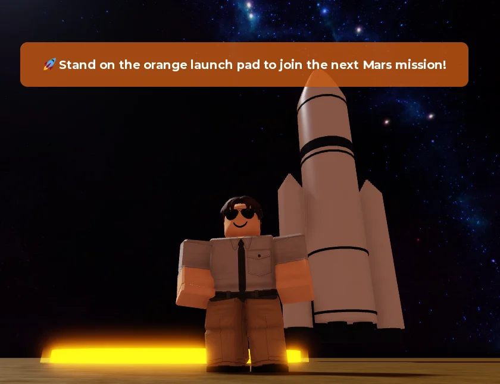

Life Support
Air depends on steady power. Night heaters raise demand, and colder nights make the trade-off sharper. Underpowered? Air starts falling and water recovery slips from 98% to 93%.
AIR · HEAT · RECYCLINGA CO-OP SURVIVAL SIMULATION
Six crew members land on Mars. The sun sets. The work keeps coming. Keep air, water and food above zero until mission’s end.

SURFACE LOG / 01GAMEPLAY · LAUNCH PAD / MISSION QUEUETHE WHOLE CREW, ONE LIFE SUPPORT SYSTEM
Players queue at the launch pad and head to a Mars outpost together. It’s not a race to collect things; it’s a shift-by-shift balancing act. Power spent on one system can’t be spent on another.
DAYLIGHT IS A RESOURCE
Solar output follows the four-part day. Unused power charges the battery; after sunset, solar output is zero. Walk to a machine and press E to add power or Q to pull it back.
Air depends on steady power. Night heaters raise demand, and colder nights make the trade-off sharper. Underpowered? Air starts falling and water recovery slips from 98% to 93%.
AIR · HEAT · RECYCLINGTwo power keeps food steady. Take it away to cover a shortfall elsewhere and the crew’s food supply starts to shrink.
FOOD · 2 POWER TO HOLDPowered comms produces science and brings warnings from Earth. Radio takes 3–22 minutes to reach Mars; with Comms down, a storm warning may never arrive.
SCIENCE · EARTH LINKThe numbers are mission rules, not real-time telemetry.
THE OUTPOST DOESN’T WAIT
Radiation warnings force a hard call. Get inside the shielded shelter and ride out the storm—or keep working outside and risk exposure. In shelter, you can’t run machines or take jobs. The backlog grows.
Once the storm passes, the crew comes back to a running outpost and a pile of work.
SHORT JOBS, REAL CONSEQUENCES
Overcooked-style timed jobs pop up around the base. They arrive faster as the mission advances and as more crew join. Miss too many and the whole outpost feels it.
CO-OP, NOT SOLO HEROICS Share machine upkeep. Take jobs. Patch hull damage together. Anyone can run a machine—just call out what the outpost needs.
BUILT FOR CURIOUS CREWS · AGES 7–12
Power, safety, food and science all compete for the same attention. The crew sees the consequences as they play, then talks through what happened.
Picture-card tutorial, a “Do this now” prompt and status labels at every machine.
Disaster popups explain the event and a useful next step—without hiding the cost.
Mission debrief recaps key decisions, generates lessons from that round and points to sourced NASA facts.
AFTER THIS MISSION